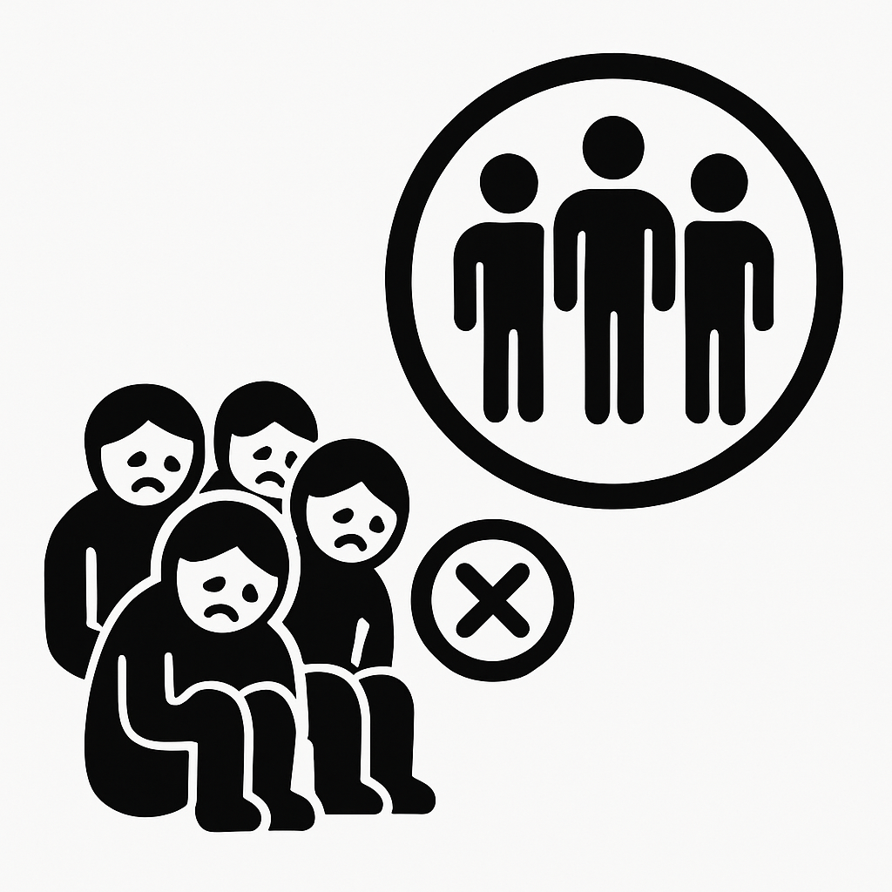

Leadership da series~2.Quick Win
People join companies, they leave managers

มาต่อกันที่ Leadership da series หัวข้อที่ 2. Quick Win กันนะคะ ต่อเนื่องจากบทความแรก https://medium.com/@kimwannachar./leadership-da-series-1-self-check-9f1a17e526a0
ขอขอบคุณ ศ.ดร.มณีวรรณ ฉัตรอุทัย ที่อบรมให้ความรู้แก่ศิษย์อย่างเต็มกำลัง ให้เราได้มาแบ่งปันบทความนี้ค่ะ
Quick Win : Leader-Member Exchange (LMX)
คือ แนวคิดด้านภาวะผู้นำ โดยทฤษฎีนี้เน้นว่า ผู้นำไม่ได้ปฏิบัติต่อลูกน้องทุกคนอย่างเท่าเทียมกัน แต่จะสร้างความสัมพันธ์ที่แตกต่างกันไปกับลูกน้องแต่ละคน
ผู้พัฒนาแนวคิดนี้ : George B. Graen
หลักการของทฤษฎี : การแบ่งลูกน้องออกเป็น 2 กลุ่ม
กลุ่ม 1) In-Group
- ลูกน้องที่ผู้นำไว้วางใจ มีความสัมพันธ์แน่นแฟ้น
- ได้รับโอกาสในการเติบโต, ได้ข้อมูล, ได้รับการสนับสนุน, ความมั่นใจ, ความใส่ใจ
- มีส่วนร่วมในการทำงานเชิงรุกมากกว่า
- ได้รับการดูแล, เชื่อใจ, ปฏิสัมพันธ์กับผู้นำสูง
กลุ่ม 2) Out-Group
- ลูกน้องที่ผู้นำมีความสัมพันธ์ด้วยแบบพื้นฐาน เป็นทางการ
- ไม่ค่อยได้รับโอกาสพิเศษ หรือการสนับสนุนพิเศษ
- ลูกน้องมักมาทำงานตามหน้าที่ และกลับบ้าน
- มีความผูกพันกันน้อย และมีปฏิสัมพันธ์กับผู้นำต่ำ
ปัจจัยที่มีผลต่อการจัดกลุ่ม
คือ อายุ, เพศ, ระดับการศึกษา, สายอาชีพ, บุคลิกภาพส่วนตัว, ความสามารถ, ทักษะ, ศักยภาพ, การมีบทบาททางการเมืองในองค์กร, ความประทับใจแรก, ความคุ้นเคย หรือมีความสัมพันธ์เดิมกับผู้นำ
กระบวนการของ LMX 3 ขั้นตอน
1) Enlist In-Group : คัดเลือกคนที่เหมาะสมหรือมีศักยภาพเข้า In-Group
2) Exchange Performance & Benefits : มีการแลกเปลี่ยนงาน ความสามารถ กับผลตอบแทน เช่น โอกาสในการพัฒนาตัวเอง เป็นต้น
3) Eliminate or Expand : ปรับกลุ่ม กำจัดความเป็น In-Group และ Out-Group ออก ขยายให้เป็น Our Group
อาจารย์อธิบายเสริมไว้ว่า “ผู้นำที่ดีควรต้องกำจัด (eliminate) ความเป็นวงในหรือวงนอกออกให้หมด เหลือแต่วงเดียวคือ Our Group (not in or out…but our) ไม่เช่นนั้นก็จะเป็นการบริหารแบบเอาแต่พวกตัวเอง แต่ควรต้องขยายวง (expand) ไปมองหาคนเก่งที่อาจอยู่ในวงนอก แล้วดึงมาทำงานด้วย โดยต้องไม่ลืมว่าแท้จริงแล้วนักบริหารก็อาจเป็นนักเดินทางไกลไปในหลากหลายองค์กร จึงต้องหมั่นเก็บสะสมคนเก่งเพื่อร่วมเดินทางต่อไปด้วยกัน (เหมือนโจโฉ แม้จะดุร้าย แต่ก็มีสายตาแหลมคม มองเห็นจุดดีในคนทำงาน เช่น จูล่ง และ กวนอู เป็นต้น”
ปัจจัยที่ส่งผลต่อการพัฒนา หรือรักษา LMX
1) New Job/New Company : ความสัมพันธ์ต้องเริ่มใหม่หมด
ส่งผล หากมีการเปลี่ยนแปลงในเรื่องของการย้ายงาน ทำให้ต้องพัฒนาความสัมพันธ์ใหม่ ต้องใช้พลัง เวลา ในการสร้างความสัมพันธ์ใหม่ต่อตัวบุคคลในแต่ละคน
2) Time constrains : ผู้นำมีเวลาจำกัดในการสร้างความสัมพันธ์กับทุกคน
ส่งผล ด้วยเวลาที่จำกัด จึงทำให้จำนวนในการสร้างความสัมพันธ์แปรผันตามเวลาที่มี
3) Expectations : ผู้นำมักถูกคาดหวังให้ส่งมอบผลงานโดยเร็ว
ส่งผล เมื่อต้องส่งมอบงานให้เร็ว ให้ทัน ให้มีประสิทธิภาพ บ่อยครั้งที่จำเป็นต้องเลือกพนักงานที่มีคุณสมบัติเหมาะสมในงานนั้นๆ เสมอๆ เช่น มีความสามารถ มีความทุ่มเท มีทักษะ เป็นต้น เพื่อให้มั่นใจว่าจะส่งงานทันเวลา
4) Resources : เวลา, งบประมาณ, การสนับสนุนจากผู้บริหาร
ส่งผล การสร้างความสัมพันธ์กับพนักงานต้องอาศัยทรัพยากรหลายอย่าง หากขาดแคลน หรือจัดสรรได้ไม่เต็มที่ ความสัมพันธ์จะพัฒนาได้อย่างช้าๆ
สรุป ในมุมมองของวรรณชา
1. ผู้นำ(Leader) จะมีความสัมพันธ์กับลูกน้อง(Subordinates) แบ่งเป็น 2 กลุ่ม คือ
- In Group (กลุ่มวงใน): ผู้นำมีการปฏิบัติที่พิเศษกว่า, มีความไว้ใจ, มีปฏิสัมพันธ์มาก (High interaction)
- Out Group (กลุ่มวงนอก): มีเพียงความสัมพันธ์ทางหน้าที่การงาน
2. ยิ่งความสัมพันธ์แน่นแฟ้น ลูกน้องยิ่งมีโอกาสพัฒนาเติบโต และมีผลงานที่ดีกว่า
3. หากองค์กรส่งเสริมให้ผู้นำสร้าง LMX ในเชิงบวกกับลูกน้องทุกคน องค์กรจะได้ประโยชน์ ทั้งด้านผลลัพธ์ และความพึงพอใจของพนักงาน
ขอให้ทุกท่านสนุกกับการอ่าน และการสร้างทีมค่ะ